About Calligraphy
I have interests in calligraphy since I was 18. I started with Chinese calligraphy and explored Western calligraphy after 2 years. Here are some pictures of tools I used and my works.
Chinese Calligraphy

Chinese calligraphy is a form of aesthetically pleasing writing (calligraphy), or, the artistic expression of human language in a tangible form. This type of expression has been widely practiced in China and has been generally held in high esteem across East Asia. There are some general standardizations of the various styles of calligraphy in this tradition.
Tools
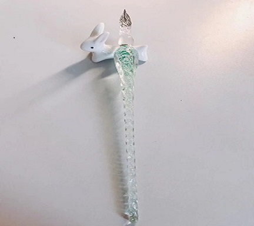 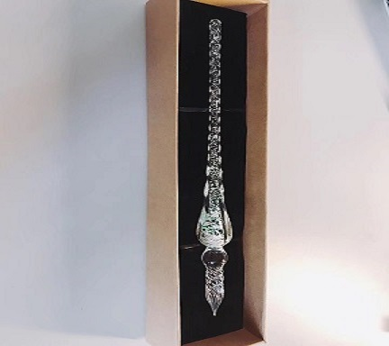 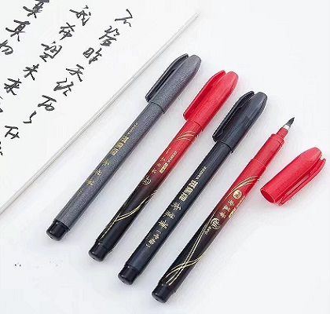 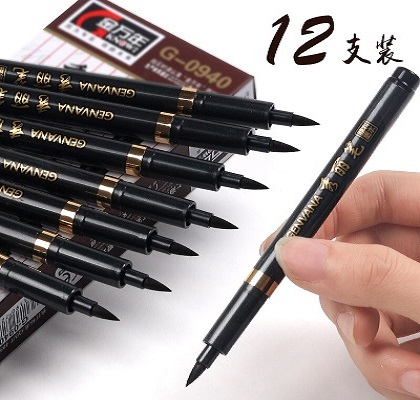 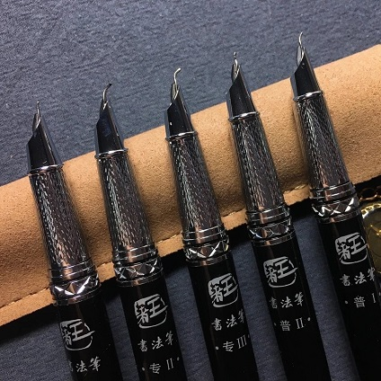
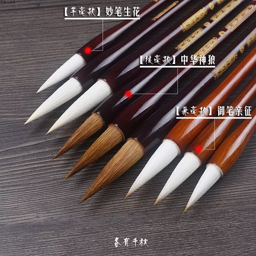
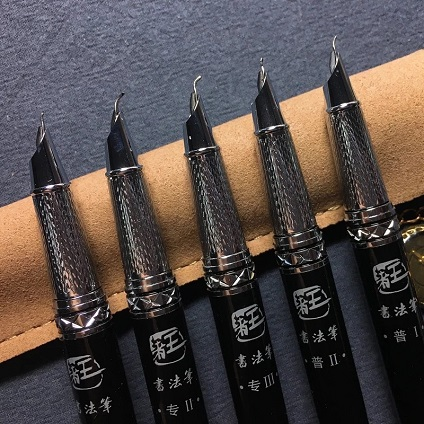
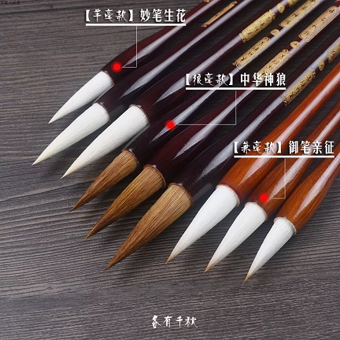

My works
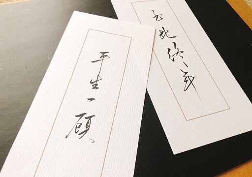 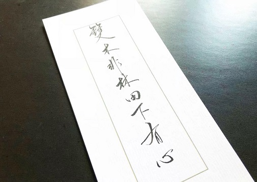 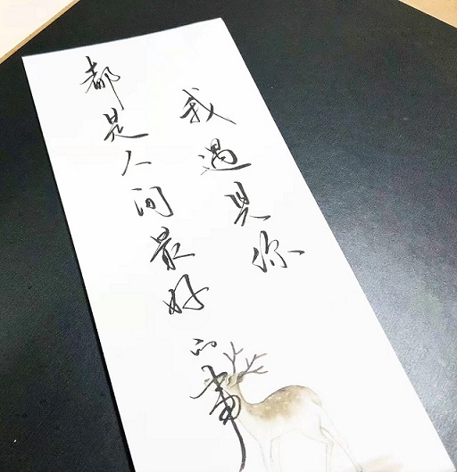 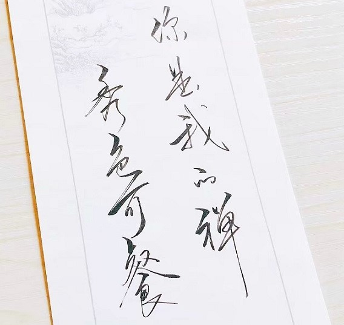 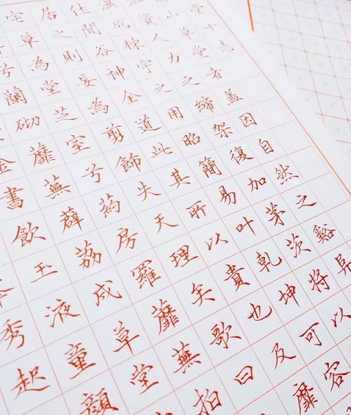 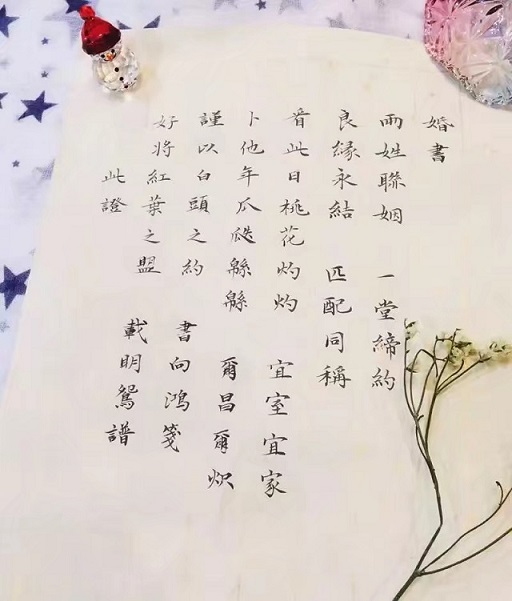English Calligraphy
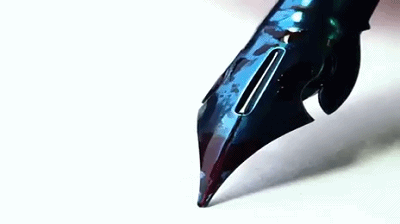Western calligraphy is recognizable by the use of the Latin script. The Latin alphabet appeared about 600 BC, in Rome, and by the first century developed into Roman imperial capitals carved on stones, Rustic capitals painted on walls, and Roman cursive for daily use. In the second and third centuries the uncial lettering style developed. As writing withdrew to monasteries, uncial script was found more suitable for copying the Bible and other religious texts. It was the monasteries which preserved calligraphic traditions during the fourth and fifth centuries, when the Roman Empire fell and Europe entered the Dark Ages.
Tools
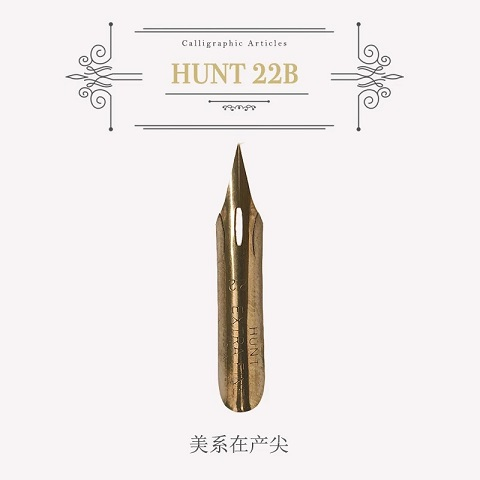 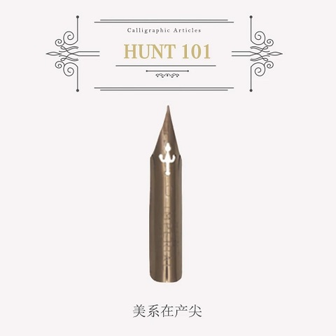 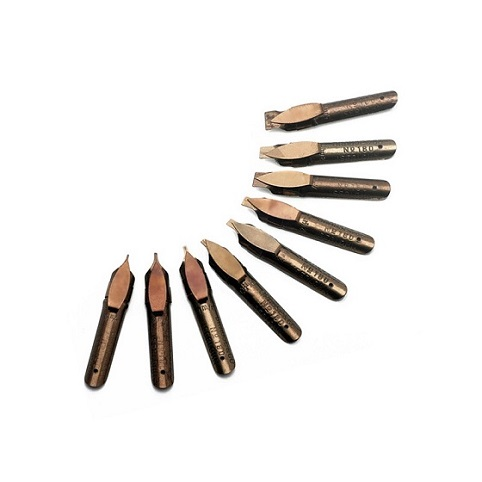 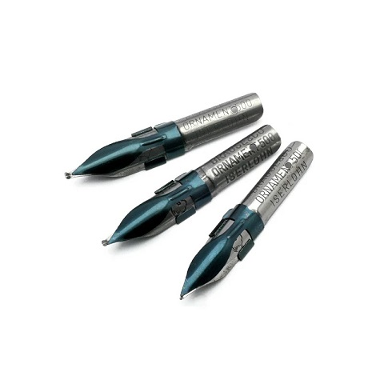

My works


Copyright 2018 Jiawen Li Contact by e-mail Powered by: Github